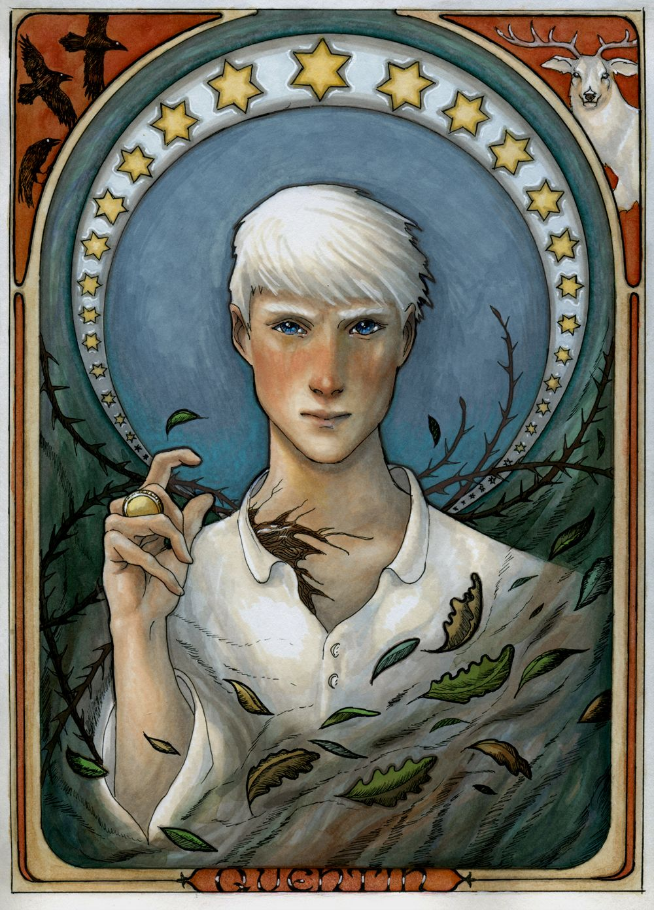

- The Magicians
- Narnia
- Harry Potter
The Magicians is a novel by lev grossman, who graduated Harvard University. The novel is about dream, magic and fantasic world.(where i wanna be) There comes Quentin Coldwater, Julia, Eliot, Alice Quinn, Penny, Josh, Janet, Lichard...... I like them all. Because that's what i dreaming. you know, the magic school, sleeping on a lawn, playing each other with card game...... I seriously want them. the magical moment. that's what i really want. what i really care. Quentin, Do You Hear Me?
